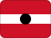

Comoros
History
Discovery by Portuguese explorers was an important early state or ruling power in the region, giving Comoros deep historical roots.
Ngazidja, Ndzuwani, Mwali under French rule, an important milestone in Comoros' political development.
Protectorate of the Comoros was an important early state or ruling power in the region, giving Comoros deep historical roots.
Territory under French Madagascar was an important early state or ruling power in the region, giving Comoros deep historical roots.
Overseas territory was an important early state or ruling power in the region, giving Comoros deep historical roots.
State of Comoros was an important early state or ruling power in the region, giving Comoros deep historical roots.
Comoros became independent from France, marking a key step in modern statehood.
Federal Islamic Republic of Comoros, an important milestone in Comoros' political development.
Short facts
RegionEast Africa / Indian Ocean Africa
LanguageArabic, French
Time zoneTBC
Drives onTBC
Worth seeing
- Culture: Local food, music, markets and heritage routes.
- City base: Moroni gives the country a clear planning anchor.
- Nature: Regional landscapes shape routes and seasonality.
Planning questions
What is Comoros known for?Culture, City base, Nature.
What is the capital?Moroni.
Which language is useful?Arabic, French.
When is the national day?TBC.
How should I browse it here?Start with the facts, jump to linked cities, then check events and topics.
Upcoming events
No future Comoros-linked events are active in the current dataset.
Food & drink
 Street food
Street food Coffee
CoffeeKnown for
CultureCity baseNatureMoroniStreet foodCoffee
 Music & Culture
Music & Culture Island and coast routes
Island and coast routes